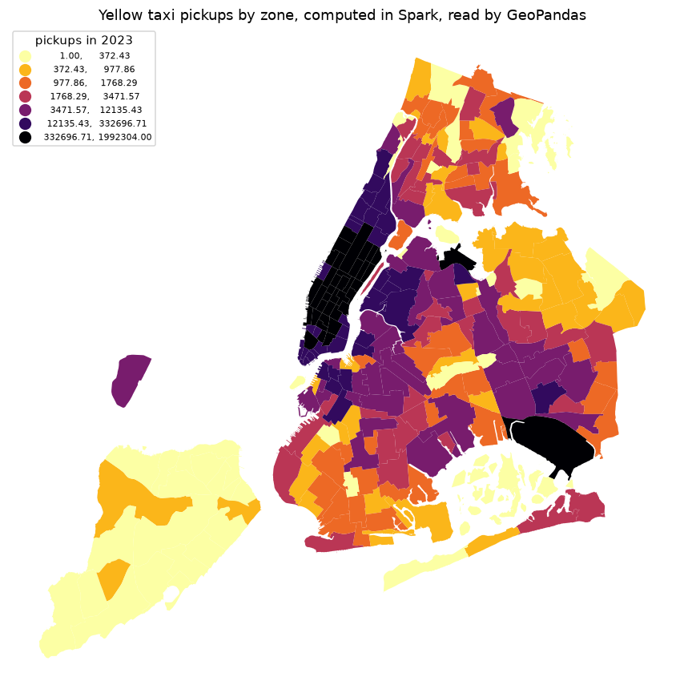

Dask is not the only engine for large spatial data. Many organisations keep their data in a data lake processed by Apache Spark, and Apache Sedona adds spatial types, spatial SQL functions, spatial partitioning and spatial joins to Spark. When the data already live there, or when both sides of a join are too large for one machine, Sedona is the natural tool. This notebook starts a Sedona session from geolattice.distributed.sedona, runs the same spatial joins with Sedona and with GeoLattice’s Dask engine, writes spatial SQL over the New York taxi zones and 38 million trips, and reads and writes GeoParquet from Spark.
Overview
Spark’s model
Part
Role
Driver
the program you write; plans the job
Executors
JVM processes (on this machine: threads of one JVM in local[*] mode) that run tasks
Partitions
slices of a DataFrame; one task per partition per stage
Shuffle
moves rows between partitions between stages (joins, group-bys)
Lazy plans
transformations build a plan; actions (count, collect, write) run it, after the Catalyst optimizer has rewritten it
What Sedona adds
A geometry type and about 200 ST_ functions (ST_Contains, ST_Intersects, ST_DWithin, ST_Buffer, ST_Area, ST_Transform, …), callable from SQL and the DataFrame API.
Spatial joins: when a join condition is a spatial predicate, Sedona partitions both sides spatially (KDB-tree or quadtree grids), builds an index per partition and tests only matching partitions. A small side can instead be broadcast to every executor.
GeoParquet and shapefile readers and writers, and raster functions.
Spark or Dask?
Situation
Better fit
data already in a Spark lake, SQL users, a Databricks or EMR cluster
Spark with Sedona
both sides of a join have hundreds of millions of rows
Spark with Sedona (spatial partitioning of both sides)
one side is small (zones, counties, facilities)
either; Dask sends the small side to every task
rasters, NumPy and GPU work, Python-first workflows
Dask (and GeoLattice)
Moving data between Python and the JVM is not free: GeoPandas frames are serialized (with Arrow) on the way in and out. A fair comparison counts that cost.
Sedona with GeoLattice
Function
Does
pdist.sedona.spark(master=, config=)
starts (or reuses) a Sedona-enabled Spark session; the Sedona JARs matching the installed versions are fetched from Maven on first use
pdist.sedona.to_spark(gdf), to_geopandas(sdf)
GeoDataFrame to Spark DataFrame and back (GeoArrow when available)
pdist.sedona.sjoin(left, right, predicate=)
spatial join as Spark SQL; GeoPandas in gives GeoPandas out with geopandas.sjoin’s columns, Spark in gives a lazy Spark DataFrame
pdist.vector.sjoin(..., engine="sedona")
the same, from the Dask API; engine="auto" picks Sedona when an input is a Spark DataFrame
pdist.sedona.is_spark(obj), stop()
type check; shut the session down
Installation: pip install "geolattice[distributed-spark]" (PySpark and apache-sedona) and a Java 17 or newer runtime.
Learning objectives
Describe Spark’s driver, executors, partitions and shuffles, and what Sedona adds.
Start a Sedona session and move GeoDataFrames into and out of Spark.
Run the same spatial join with Sedona and with Dask, check that the results agree, and compare the costs.
Write spatial SQL with ST_ functions on zones and trips.
Read and write GeoParquet from Spark.
Data
Dataset
Content
Kansas building footprints and counties
1.6 million polygons; 105 county polygons (EPSG:5070)
NYC taxi zones and 2023 trips
263 zones; 38.3 million trips (Parquet)
Contents
Setup
A Sedona session
Buildings by county: Sedona and Dask
Joining two Spark DataFrames
Spatial SQL on taxi zones and trips
GeoParquet in and out of Spark
Summary and exercises
Setup
Code
import warnings # warning controlwarnings.filterwarnings("ignore") # hide routine library warningsimport os # environment and CPU countimport time # wall-clock timingfrom pathlib import Path # file pathsimport matplotlib.pyplot as plt # figuresimport numpy as np # arraysimport pandas as pd # tablesimport geopandas as gpd # vector dataimport xarray as xr # labelled rastersimport geolattice # GeoLatticeimport geolattice.distributed as pdist # distributed and GPU spatial computingimport dist_data as dd # chapter helper: paths, cached downloads, timersplt.rcParams.update({"figure.dpi": 110}) # figure resolutionpd.set_option("display.width", 140) # wider printed tablesOUT = Path("outputs") # results and scratch files written by this chapterOUT.mkdir(exist_ok=True) # create it if neededcaps = pdist.capabilities() # engines and GPUs on this machineprint("GeoLattice", geolattice.__version__, "|", os.cpu_count(), "CPU cores |", caps["gpus"], "GPU(s)", # versionsf"({caps.get('gpu_memory_total', 0) /1e9:.0f} GB)"if caps["gpus"] else"") # GPU memoryimport os # environment variables for Sparkimport shutil # remove scratch filesSP = OUT /"sedona"# scratch folderSP.mkdir(parents=True, exist_ok=True) # create itdef timed(fn): # wall time and result of one call t = time.perf_counter(); out = fn();return time.perf_counter() - t, out # time it
pdist.sedona.spark starts Spark in local mode on all cores (local[*]) with Sedona registered. The configuration gives the driver JVM 24 GB of memory and sets the number of shuffle partitions.
Code
print("Maven packages:", pdist.sedona.packages()) # matched to the installed Sedona and PySparkt0 = time.perf_counter() # startspark = pdist.sedona.spark("local[*]", config={"spark.driver.memory": "24g", "spark.sql.shuffle.partitions": "48", # memory and partitions"spark.ui.showConsoleProgress": "false"}) # quiet progress barsspark.sparkContext.setLogLevel("ERROR") # only errors in the logprint(f"Spark {spark.version} with Sedona, started in {time.perf_counter() - t0:.0f} s, {spark.sparkContext.defaultParallelism} default partitions") # session
Spark 4.0.5 with Sedona, started in 5 s, 24 default partitions
Buildings by county: Sedona and Dask
The join from notebook 04, now with three engines: GeoPandas on one core, GeoLattice’s partitioned Dask join, and Sedona. With GeoPandas input, pdist.sedona.sjoin sends the geometries to Spark, joins there and builds the result with GeoPandas’ own join code, so the columns match geopandas.sjoin exactly.
same pairs: Dask True | Sedona True | same columns: True
seconds
GeoPandas, one core
2.02
GeoLattice Dask, 24 threads
1.05
Sedona, GeoPandas in and out
2.48
All three engines return the same 1.6 million pairs and the same columns. On one machine with a small right side, the Dask join is the fastest: it ships the 105 counties to every task and never leaves Python. Sedona pays to move 1.6 million geometries from Python into the JVM and the pairs back. That overhead is fixed by the data size, not the cluster size; on a cluster with the data already in Spark it disappears, and Sedona’s spatial partitioning then scales across machines.
Joining two Spark DataFrames
When the data start in Spark, nothing crosses the Python boundary until the result is small. The buildings are written once as GeoParquet; Spark reads them directly, and pdist.vector.sjoin with Spark DataFrames on both sides returns a lazy Spark DataFrame (engine="auto" detects Spark). Spark plans the join as a spatial join, visible in the physical plan.
Code
bld[["geometry"]].to_parquet(SP /"buildings_5070.parquet") # GeoParquet for Sparks_bld = spark.read.format("geoparquet").load(str(SP /"buildings_5070.parquet")) # lazy Spark DataFrames_ks = pdist.sedona.to_spark(ks) # 105 counties into Sparkprint("Spark inputs:", pdist.sedona.is_spark(s_bld), pdist.sedona.is_spark(s_ks), "| partitions:", s_bld.rdd.getNumPartitions()) # typesjoined = pdist.vector.sjoin(s_bld, s_ks, predicate="intersects") # engine="auto" picks Sedona: lazy resultplan = joined._jdf.queryExecution().executedPlan().toString() # the physical planprint([line.strip()[:90] for line in plan.splitlines() if"Join"in line or"Range"in line][:3]) # the join operatort0 = time.perf_counter() # startper_county = joined.groupBy("FIPS", "county").count().toPandas() # run: only 105 rows come backprint(f"join and count in Spark: {time.perf_counter() - t0:.1f} s; {int(per_county['count'].sum()):,} pairs") # timeper_county.sort_values("count", ascending=False).head(5) # largest counties
The physical plan shows a BroadcastIndexJoin rather than a cartesian product: Sedona recognised the ST_Intersects condition, built a spatial index on the small side (the 105 counties) and broadcast it to every task. Reading the GeoParquet, joining and grouping inside Spark took about as long as the round trip of the previous cell, and still more than the Dask join. On one machine Spark’s own overheads (planning, the JVM, moving rows between stages) are visible; its strengths are data that already live in Spark, and clusters of many machines.
Spatial SQL on taxi zones and trips
Spatial SQL combines ordinary SQL with ST_ functions. The zones go into Spark in their native New York state plane CRS (feet), and Spark reads the 38 million trips straight from Parquet.
Code
zones = dd.taxi_zones() # 263 zones, EPSG:2263 (feet)pdist.sedona.to_spark(zones).createOrReplaceTempView("zones") # a SQL viewspark.read.parquet(str(dd.TAXI)).createOrReplaceTempView("trips") # 38 million trips, a SQL viewq1 = spark.sql(""" SELECT z.borough, COUNT(*) AS zones, ROUND(SUM(ST_Area(z.geometry)) / 27878400, 1) AS area_mi2 FROM zones z GROUP BY z.borough ORDER BY area_mi2 DESC""") # zone area by borough (27,878,400 square feet per square mile)q1.toPandas() # run
borough
zones
area_mi2
0
Queens
69
111.7
1
Brooklyn
61
68.0
2
Staten Island
20
58.2
3
Bronx
43
42.6
4
Manhattan
69
22.7
5
EWR
1
2.8
Code
q2 = spark.sql(""" WITH jfk AS (SELECT geometry FROM zones WHERE zone = 'JFK Airport') SELECT z.LocationID, z.zone, z.borough, ROUND(ST_Distance(ST_Centroid(z.geometry), ST_Centroid(j.geometry)) / 5280, 2) AS miles_to_jfk FROM zones z, jfk j WHERE ST_DWithin(z.geometry, j.geometry, 3 * 5280) AND z.zone <> 'JFK Airport' ORDER BY miles_to_jfk""") # zones within 3 miles of the JFK Airport zonenear_jfk = q2.toPandas() # runprint(len(near_jfk), "zones within 3 miles of JFK") # countnear_jfk.head(8) # the nearest
30 zones within 3 miles of JFK
LocationID
zone
borough
miles_to_jfk
0
219
Springfield Gardens South
Queens
1.56
1
218
Springfield Gardens North
Queens
1.87
2
10
Baisley Park
Queens
2.22
3
203
Rosedale
Queens
2.58
4
216
South Ozone Park
Queens
2.65
5
139
Laurelton
Queens
3.04
6
2
Jamaica Bay
Queens
3.15
7
124
Howard Beach
Queens
3.17
Code
t0 = time.perf_counter() # startq3 = spark.sql(""" SELECT z.borough, z.zone, t.n AS pickups, ROUND(t.fare, 2) AS mean_fare, ROUND(t.n / (ST_Area(z.geometry) / 27878400)) AS pickups_per_mi2 FROM (SELECT PULocationID, COUNT(*) AS n, AVG(total_amount) AS fare FROM trips GROUP BY PULocationID) t JOIN zones z ON z.LocationID = t.PULocationID ORDER BY pickups_per_mi2 DESC""").toPandas() # trips per zone joined to the zone geometryprint(f"38 million trips grouped and joined to zones in {time.perf_counter() - t0:.1f} s") # timeq3.head(8) # the densest pickup zones
38 million trips grouped and joined to zones in 0.9 s
borough
zone
pickups
mean_fare
pickups_per_mi2
0
Manhattan
Penn Station/Madison Sq West
1305113
24.97
9722051.0
1
Manhattan
Midtown East
1353753
24.18
7806934.0
2
Manhattan
Midtown North
1110093
24.75
7505247.0
3
Manhattan
Midtown Center
1766041
24.95
6782988.0
4
Manhattan
Times Sq/Theatre District
1270681
28.35
6257192.0
5
Manhattan
Upper East Side South
1791795
20.44
5156689.0
6
Manhattan
Garment District
634083
25.45
4673704.0
7
Manhattan
Lincoln Square East
1256024
22.07
4586655.0
The third query mixes an ordinary aggregation of 38 million rows with a geometric measure: pickups per square mile. Penn Station, the Midtown zones and Times Square lead by far; the Upper East Side has more pickups in total but spread over a larger area. Spark ran the aggregation in parallel over the Parquet row groups and joined the 263 results to the zones.
The trips carry zone IDs, not coordinates, so the last example creates points: one million random points in the zones’ bounding box, assigned to zones with ST_Contains in Sedona and with GeoLattice’s GPU point-in-polygon join.
Code
rng = np.random.default_rng(0) # random pointsx0, y0, x1, y1 = zones.total_bounds # bounding box of the zonespts = gpd.GeoDataFrame({"pid": np.arange(1_000_000)}, geometry=gpd.points_from_xy(rng.uniform(x0, x1, 1_000_000), rng.uniform(y0, y1, 1_000_000)), crs=zones.crs) # 1 million pointspts.to_parquet(SP /"points.parquet") # as GeoParquet for Sparkspark.read.format("geoparquet").load(str(SP /"points.parquet")).createOrReplaceTempView("pts") # a SQL viewt = {} # timingst["Sedona SQL, ST_Contains"], s_cnt = timed(lambda: spark.sql( # join and count in Spark"SELECT z.LocationID, COUNT(*) AS n FROM zones z JOIN pts p ON ST_Contains(z.geometry, p.geometry) GROUP BY z.LocationID").toPandas())t["GeoLattice, GPU point in polygon"if caps["gpus"] else"GeoLattice, CPU"], g_j = timed(lambda: pdist.vector.sjoin(pts, zones, predicate="within")) # Dask pathg_cnt = g_j.groupby("LocationID").size() # count per zonesame = s_cnt.set_index("LocationID").n.sort_index().equals(g_cnt.sort_index().rename("n")) # identical counts?print(f"points inside a zone: {int(s_cnt.n.sum()):,} of 1,000,000; same counts in both engines: {same}") # checkpd.Series(t, name="seconds").round(2).to_frame() # table
points inside a zone: 361,345 of 1,000,000; same counts in both engines: True
seconds
Sedona SQL, ST_Contains
1.91
GeoLattice, GPU point in polygon
0.66
GeoParquet in and out of Spark
Results written from Spark as GeoParquet are read by GeoPandas, QGIS or DuckDB without conversion.
Code
out_sdf = spark.sql(""" SELECT z.LocationID, z.zone, z.borough, t.n AS pickups, z.geometry FROM (SELECT PULocationID, COUNT(*) AS n FROM trips GROUP BY PULocationID) t JOIN zones z ON z.LocationID = t.PULocationID""") # pickups with geometryout_sdf.write.mode("overwrite").format("geoparquet").save(str(SP /"pickups_by_zone")) # written by Spark, one file per partitionback = gpd.read_parquet(SP /"pickups_by_zone").set_crs(zones.crs, allow_override=True) # read by GeoPandasprint(len(back), "zones read back;", len(list((SP /"pickups_by_zone").glob("*.parquet"))), "Parquet files") # checkax = back.plot("pickups", cmap="inferno_r", scheme="quantiles", k=7, legend=True, figsize=(8, 8), # map legend_kwds={"fontsize": 7, "loc": "upper left", "title": "pickups in 2023"}) # legendax.set_title("Yellow taxi pickups by zone, computed in Spark, read by GeoPandas"); ax.set_axis_off(); plt.tight_layout(); plt.show() # draw
261 zones read back; 1 Parquet files

Code
pdist.sedona.stop() # stop Sparkshutil.rmtree(SP) # remove the scratch files
Summary and exercises
Spark runs lazy, optimized plans over partitions with executors; Sedona adds geometry types, ST_ functions, spatial partitioning and spatial joins.
pdist.sedona.spark starts a session with the matching Sedona JARs; to_spark and to_geopandas move data across the Python and JVM boundary.
The county join gave identical pairs with GeoPandas, Dask and Sedona. With GeoPandas input on one machine, Dask was fastest, because Sedona paid to move the geometries into the JVM; with both inputs read by Spark, the join and aggregation ran inside Spark and only 105 rows came back, in about the same time.
Spatial SQL combined ST_Area, ST_DWithin, ST_Distance and ST_Contains with ordinary aggregation of 38 million trips, and Spark wrote GeoParquet that GeoPandas read directly.
Exercises
Repeat the Spark-only join with spark.sql.shuffle.partitions set to 8 and to 200. How does the time change?
Use ST_Buffer to find the taxi zones within 1 mile of Central Park and count their pickups.
Join the buildings with themselves in Sedona (ST_DWithin with 20 m) to count each building’s close neighbours; why would this be hard with the Dask engine?
Read the GeoParquet written by Spark with DuckDB’s spatial extension and repeat one query.